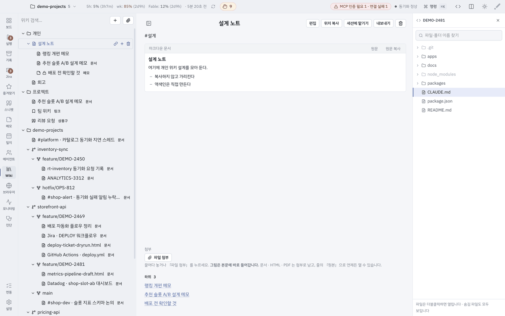

메뉴얼
화면과 메뉴마다 「무엇을 하는가 → 따라 하기 → 캡처」 순서로 적힌 사용자 메뉴얼이 있습니다. 절 118개 · 캡처 143장 · 키워드 검색이 들어 있고, 앱 안에서는 도움말 › 사용자 메뉴얼 이 같은 문서를 엽니다.
판
앱 버전마다 메뉴얼이 따로 섭니다. 쓰고 있는 버전의 판을 여세요 — 위의 사용자 메뉴얼 열기 는 늘 최신 판으로 갑니다.
| 판 | 발행 | 열기 |
|---|---|---|
| v1.3.11 최신 | 2026-10-06 | 사용자 메뉴얼 v1.3.11 |
| v1.3.10 | 2026-10-06 | 사용자 메뉴얼 v1.3.10 |
| v1.3.5 | 2026-10-05 | 사용자 메뉴얼 v1.3.5 |
Baton 레포는 현재 판 하나만 들고 있습니다. 지난 판을 모아 두는 자리가 여기입니다 — 새 릴리스가 나올 때마다 한 판씩 쌓입니다.
처음이면 여기부터
설치하고 보드에 들어가기까지의 큰 순서입니다. 각 단계의 자세한 화면은 메뉴얼에 있습니다.
-
미리 갖춰 둘 것을 확인합니다 — Node ≥ 24 · Claude Code CLI 로그인 ·
gh auth login· (선택) 브라우저에서 Jira 로그인. 릴리스 페이지의 표 를 보세요. -
릴리스 에서 내 칩에 맞는 dmg 를 받아
응용 프로그램에 넣습니다. - 앱을 열면 Setup Gate 가 9스텝 진단을 걷습니다. 실패한 줄의 「고치기」를 누르면 그 자리에서 고쳐지고, 필수 스텝이 전부 초록이면 게이트가 열립니다(선택 스텝은 영향 없음). → 메뉴얼: 첫 실행
-
6번 스텝에서 워크스페이스를 추가합니다 — 폴더를 고르면 하위
.git레포를 찾아 프로젝트로 등록하고 프로젝트 맵을 만듭니다. - 보드로 들어갑니다. 왼쪽 위 워크스페이스 트리 · 왼쪽 아래 열린 세션 목록 · 오른쪽 세션 대화입니다. → 메뉴얼: 보드 구성
Jira 는 선택입니다. 미연동이어도 앱은 켜지고 티켓 폴링만 비활성이 됩니다. 읽기는 브라우저 쿠키 세션이라 별도 API 토큰이 필요 없고, 티켓 생성·전이 같은 쓰기는 세션의 Atlassian MCP 로 위임됩니다.
어디서 무엇을 하나
레일(⌘1~⌘9)별로 하는 일입니다.
| 자리 | 하는 일 | 메뉴얼 |
|---|---|---|
| 보드 | 워크스페이스 5단 트리 · worktree 그룹으로 에픽처럼 묶기 · 열려 있는 세션 · 세션 대화와 정보 칩 | 보드 |
| 실행 | 워크플로우 고르고 돌리기 · 타임라인 · 실패 지점부터 잇기 · 크론 예약 | 실행 |
| 기록 | 닫은 worktree 의 요약 · 대화 · 링크 · 산출물 아카이브와 전역 검색(⌘⇧F) | 나머지 레일 |
| Jira | 내 이슈 목록·상세 · 인라인 편집 · 새 댓글 N 배지 · 자동 사냥 | Jira |
| 즐겨찾기 · 스니펫 · 메모 · 일지 · 위키 | 링크와 글을 모아 두는 자리들 | 나머지 레일 |
| 에이전트 | 역할의 지시문 · 모델 · 도구를 보고 고치기 · 업무 요청으로 일 맡기기 | 에이전트 |
| 모니터링 · 진단 | 토큰 사용량 · 9스텝 재검사 · MCP 헬스체크와 재인증 | FAQ |

자주 걸리는 것
전체 표는 메뉴얼의 문제 해결 FAQ 에 있습니다.
| 증상 | 조치 |
|---|---|
| 채팅 응답이 안 옴 | 배너의 「계속 기다림 / 중단」 으로 답합니다. ① 진단 > Claude Code CLI 통과? ② 설정의 engine.claudePath 가 로그인된 claude 를 가리키는지(비우면 SDK 번들 CLI 라 로그인이 없습니다). |
| 보드에 세션이 안 보임 | 15초 기다리거나 새로고침. 워크스페이스 경로가 그 레포의 상위인지 확인합니다 — 경로 밖 세션은 「분류 안 됨」 그룹으로 갑니다. |
| 티켓 · PR 이 안 붙음 | 브랜치명이 feature/PROJ-1234 형식인지, 진단의 Jira · GitHub 스텝이 통과인지 봅니다. |
| MCP 「인증 필요」 배지 | 배지에서 해당 서버 재인증 → 열린 세션에 /mcp 전송 → 브라우저 OAuth. connected 까지 검증한 뒤 배지가 풀립니다. |
| 창이 안 보임 | ⌘⇧O — 작업영역 밖 좌표는 자동으로 당겨옵니다. |
| 화면이 이상함 | 설정(레일 하단) > 레이아웃 초기화. 데이터는 유지됩니다. |
완전 초기화는 마지막에. 앱을 끄고 rm -rf ~/.baton 하면 셋업부터 다시
시작하지만, 아카이브 · 성과 · 문서 연결이 함께 지워집니다.
단축키 몇 개
전체 표는 메뉴얼의 단축키 에 있습니다.
| 키 | 하는 일 |
|---|---|
| ⌘K | 명령 팔레트 |
| ⌘1~⌘9 | 레일 화면 (보드 · 실행 · 기록 · Jira …) |
| ⌘⇧F | 통합 검색 (활성 + 보관) |
| ⌘T / ⌘W | 새 세션 / 세션 탭 닫기 |
| ⌘↵ | 전송 |
| ⌘N / ⌘P | 트리 행에서 하나 더 만들기 / 그 레포의 열린 PR |
| ⌘⇧O | 전역 창 토글 — 어디서나 부르고, 보고 있으면 숨김 |